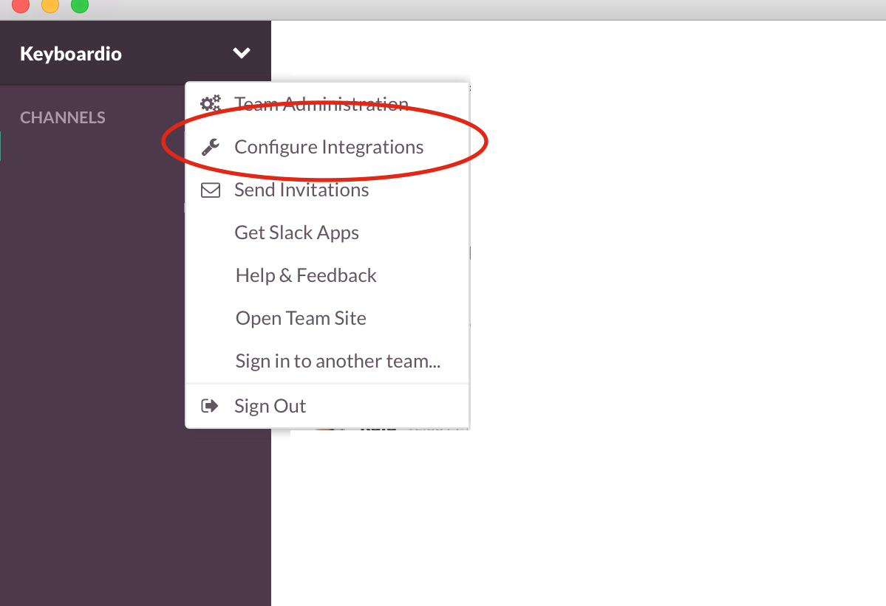
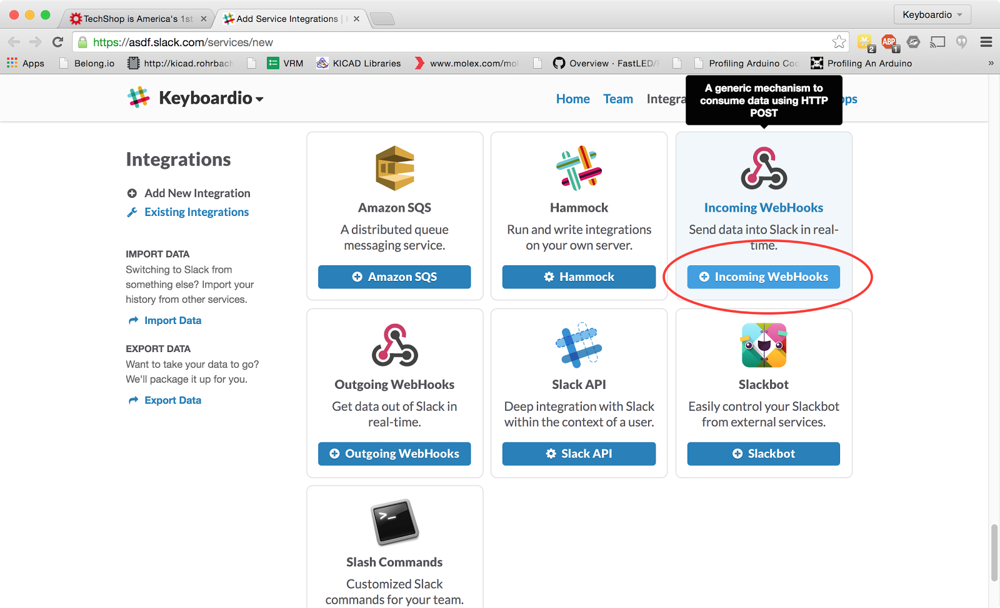
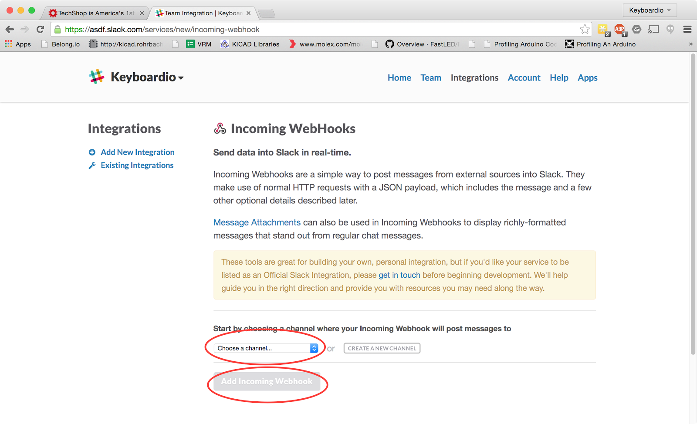
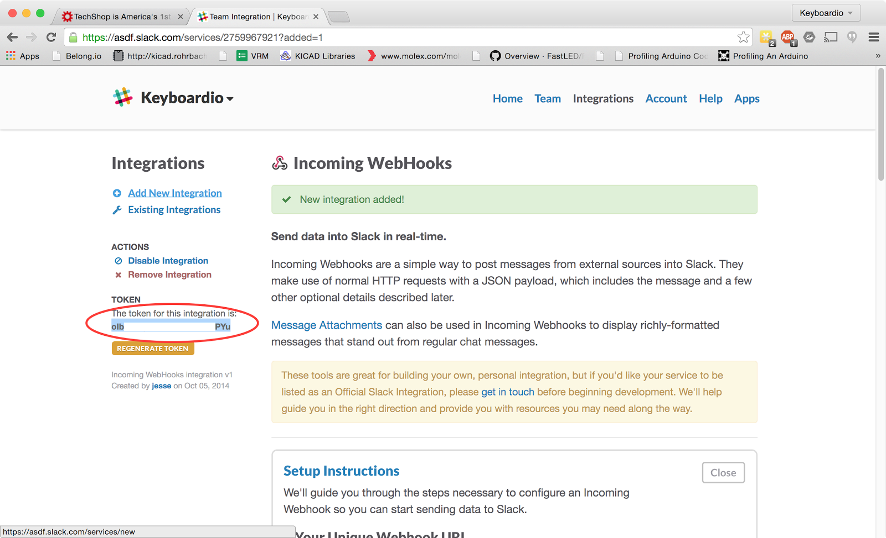
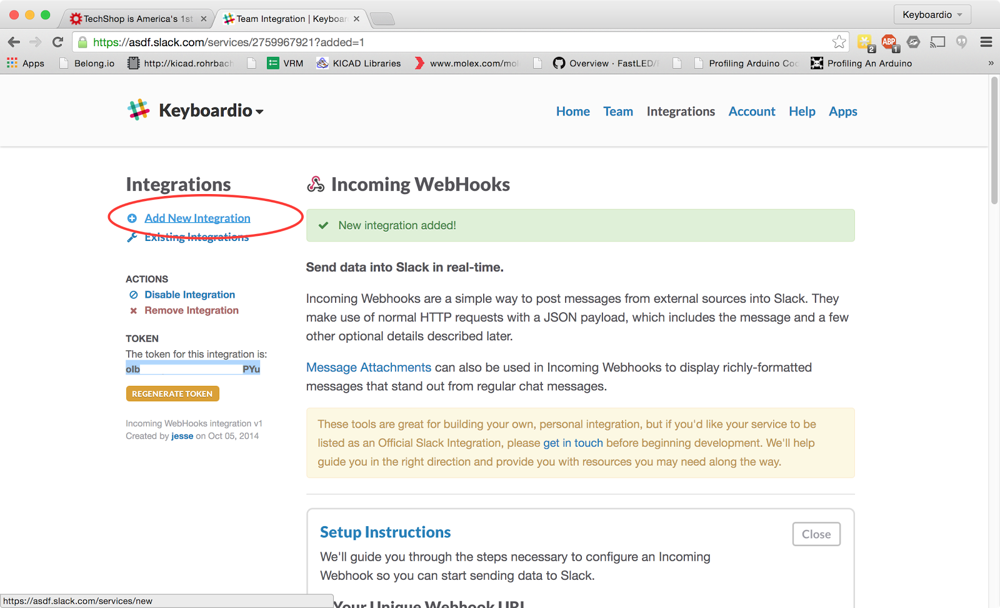
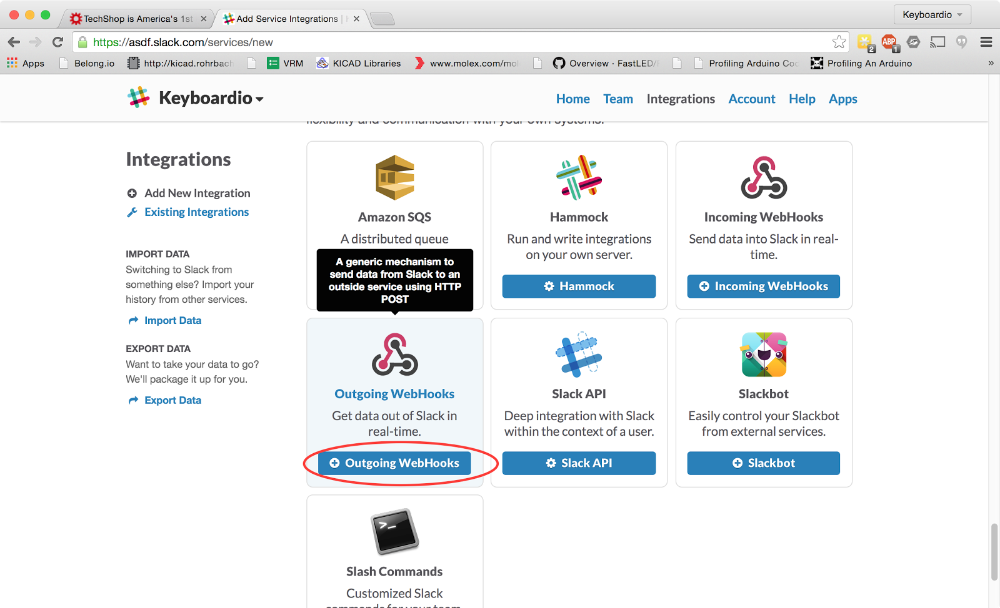
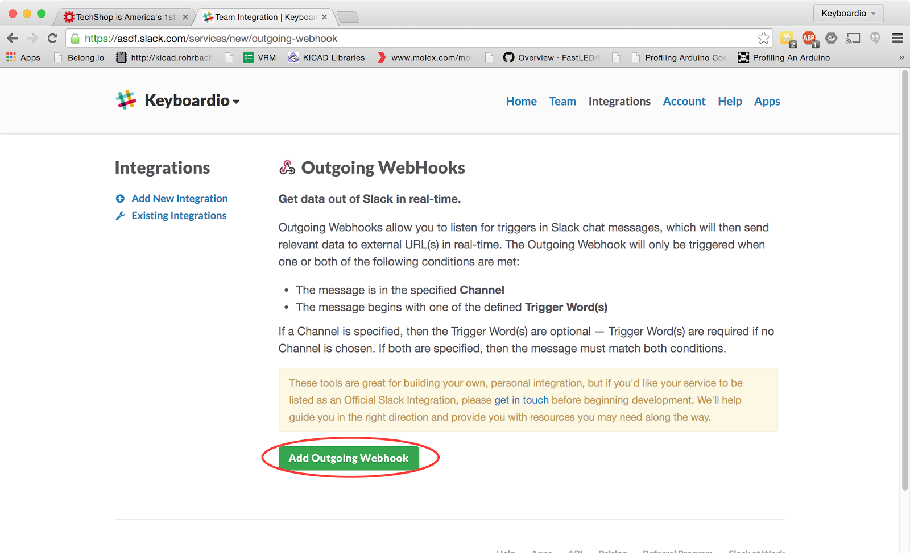
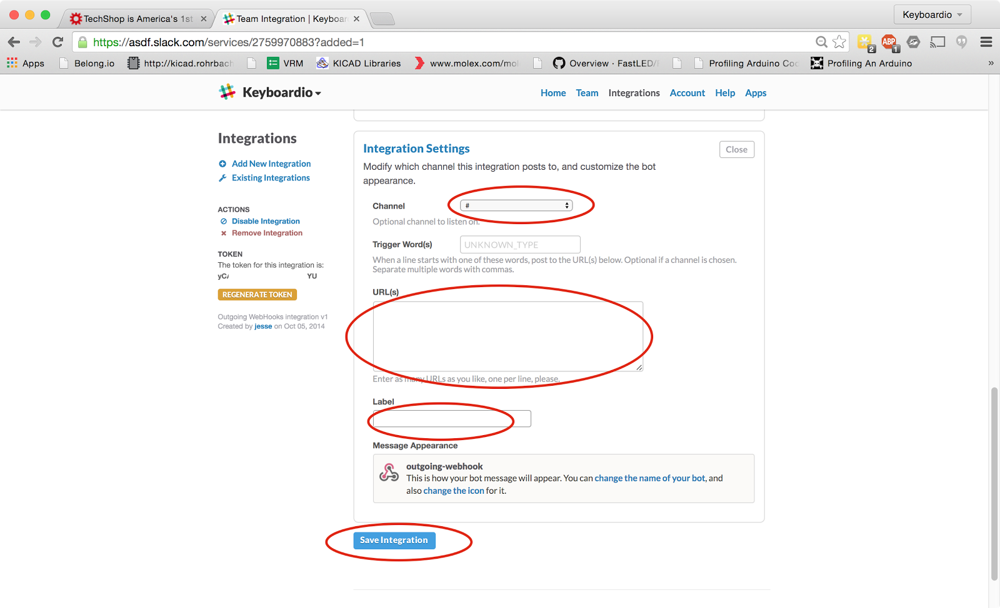

To set up a basic cross-slack integration with #slappyhour, you need the following
On each slack instance, you need to add two integrations: an incoming webhook and an outgoing webhook.
Before you begin configuring a Slack Instance to talk to #slappyhour, you will need:
First up, navigate to the integration management IO

Next, click on "Incoming Webhooks" 
Next, pick a channel where all the integration's incoming messages should go and click "Add Incoming webhook"

Once you click "add the incoming webhook", you'll see a screen that shows you the token for this webhook.
Make a note of this token. You will need to send the token, along with the name of your slack instance (xxx.slack.com) and your organization's internet domain to the person running your #slappyhour bridge.

Next, click "Add a new integration"

This time, you want to set up an outgoing webhook to send messages from your channel to the #slappyhour bridge.
Click on Outgoing Webhooks.

Click on "Add Outgoing Webhook"

For Channel, pick the channel you selected for your outgoing webhook.
For URLs, fill in the URL of the CGI script provided to you by the person running your #slappyhour bridge.
For Label, fill in something that will remind you this is a #slappyhour integration.
Click Save Integration

The last configuration step is to notify the person running your #slappyhour bridge.
You need to tell them:
Your Incoming Webhook Token
Your Slack Instance's URL (Something like https://asdf.slack.com)
Your organization's internet domain. (Something like example.com)